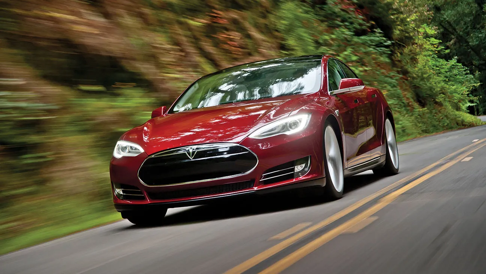

Autonomous cars, also known as self-driving cars or driverless cars, have a history dating back several decades. The concept of autonomous vehicles emerged in the 1920s with experiments conducted by engineers and researchers. However, significant advancements in technology were made in the 1980s and 1990s, leading to the development of semi-autonomous and fully autonomous prototypes.
An early model of the Tesla Model S 
Today, autonomous cars are becoming a reality, with companies like Tesla, Google (Waymo), Uber, and traditional automakers investing heavily in their development. These vehicles use a combination of sensors, cameras, radar, and artificial intelligence to navigate roads and make decisions without human intervention.
In fact, since 2018 the number of vehicles equipped with hardware for fully autonomous driving has increased by 443%. So in recent years there has been significant developement and adoption that we can only assume will continue into the future.
While autonomous cars offer potential benefits such as improved safety, reduced traffic congestion, and increased accessibility for people with disabilities, they also raise ethical concerns. One of the most significant ethical dilemmas is the issue of decision-making in critical situations. For example, if an autonomous car detects an imminent collision, how should it prioritize the safety of its occupants versus pedestrians or other vehicles?
Should a fully autonomous vehicle be trained to make descisions which reflect produce the most common good for society even if it is at the expense of its owner, or should the fully autonomous vehicle be trained to make the descsion which best protects its owner even if it is at the expense of others?
These types of questions must be at the forefront of our minds as we move into a new era where fully autonomous vehicles become a reality.
Other ethical considerations include data privacy and security, liability in accidents involving autonomous vehicles, job displacement for drivers, and the potential for increased urban sprawl and environmental impacts.
All in all, the history of autonomous cars is marked by significant technological advancements, but their widespread adoption raises complex ethical questions that society must address. As autonomous technology continues to evolve, policymakers, ethicists, and engineers must work together to ensure that these vehicles are developed and deployed in a manner that prioritizes safety, fairness, and ethical principles.